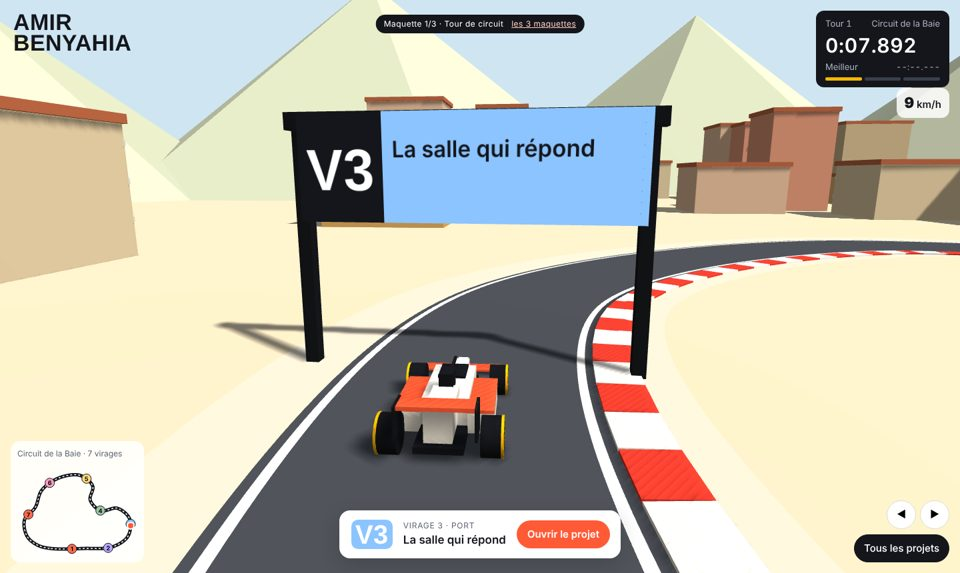
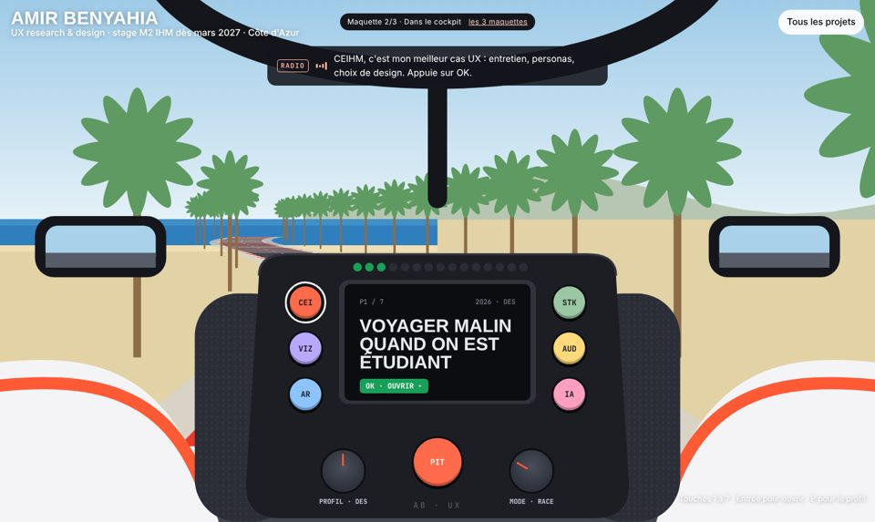
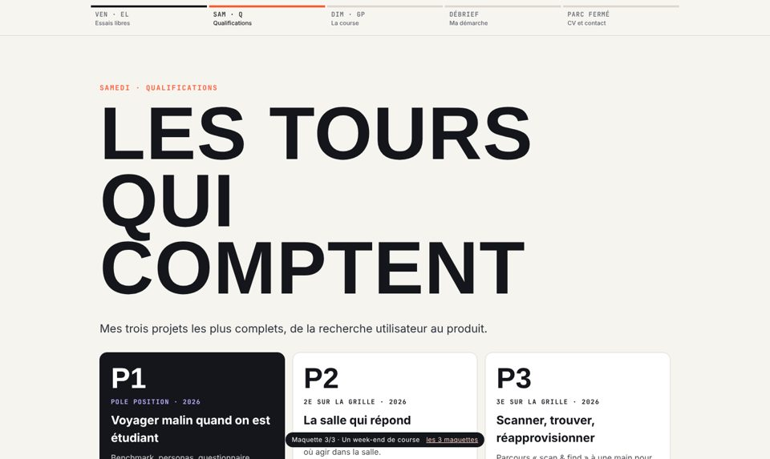

Portfolio F1 · 3 maquettes
Trois façons de rendre le portfolio immersif. Chaque maquette contient tes vrais projets et ouvre les vraies démos. Essaie-les, puis dis-moi laquelle on développe.

1
Tour de circuit
Un circuit imaginaire sur la Côte d'Azur. On roule (défilement ou flèches), chaque virage est un projet.

2
Dans le cockpit
Vue depuis le baquet. Les boutons du volant ouvrent les projets, la radio d'équipe commente.

3
Un week-end de course
Un récit au défilement : essais, qualifs, course, débrief. Les feux s'éteignent quand on arrive au projet F1.
Maquettes de direction : rien n'est final (sons, version anglaise, test participant et version texte viendront dans la version retenue). Monoplace et couleurs génériques, sans logo ni livrée officielle.